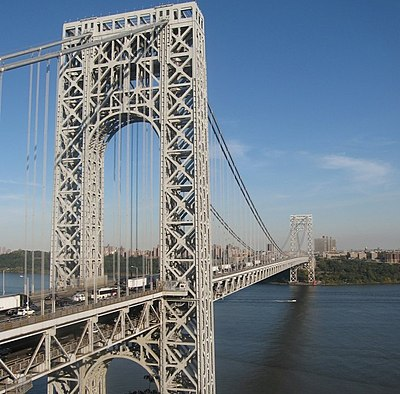

Bridges
A bridge is a structure built to span physical obstacles without closing the way underneath such as a body of water, valley, or road, for the purpose of providing passage over the obstacle. There are many different designs that each serve a particular purpose and apply to different situations. Designs of bridges vary depending on the function of the bridge, the nature of the terrain where the bridge is constructed and anchored, the material used to make it, and the funds available to build it.
There are 6 main types of bridges:-
- Arch Bridge
- Beam Bridge
- Truss Bridge
- Cantilever Bridge
- Tied-Arch Bridge
- Suspension Bridge